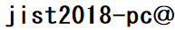

Calls
CALL FOR PROPOSALS FOR SPECIAL SESSIONS
* Submission due: 23:59 (Hawaii Time) February 6th, 2018 *
JIST 2018 introduces Special Sessions to discover and implement special topics that researchers in Semantic Technology are particularly interested in. We also intend to facilitate participation of potentially-related researchers in the JIST conference.
The papers submitted to special sessions are handled as regular or short papers, which should not be longer than 16 or 8 pages including references, respectively. The papers are reviewed *mainly* by the PC members dedicated for each special session, and acceptance/rejection will be decided based on consultation with the Special Session Track chairs and the PC chairs.
The accepted papers in the special sessions will be included in the conference proceedings. The presentations in the conference are located in each special session chaired by the proponent.
Special Session proposal should include the following information:
1) Title and short description of the special session
2) A list of at least 5 PC members (with confirmations from at least 3 of them, which can
include the proponent) for the special session
3) A brief Bio of the session chair(s)
Important dates:
- Submission due: 23:59 (Hawaii Time) February 6th, 2018
- Acceptance Notification: February 20th, 2018
- Announcement/ Call for Papers of the Special Sessions: March 4th, 2018
Proposals should be sent to via Email:
- JIST 2018 Organize Committee  knowledge-graph.jp
Contact:
 knowledge-graph.jp
knowledge-graph.jp
Organizers
- JSAI-SIG on Semantic Web and Ontology- JIST Steering Committee